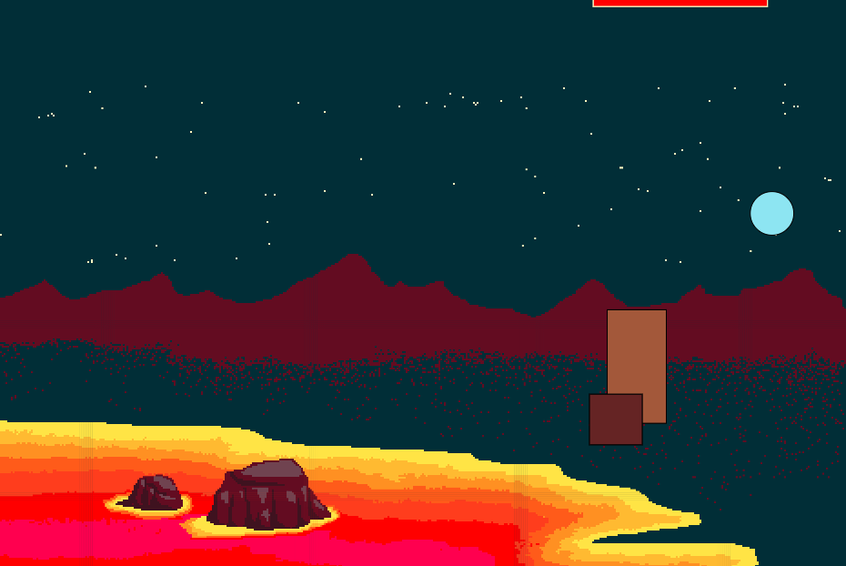

MP3: Dev Toolchain

"MIC-451" is 8-bit shooter game where you play as the space princess attempting to stop Octomon's reign.
Running MIC-451
You can access the game here.
Development Process
Since I had previous interest in game development (even though I've never tried to code one), I already had this game concept in mind. My original game was called MIC-81 and it was meant to be an 8-bit space adventure game. I decided to expand upon this concept with this project.
Actually, most of this project involved drawing all my assets in Adobe Illustrator. All things you see in the game (space princess, lava, octomon, rocks) were all drawn by hand through Illustrator. Once I finished drawing all my assets, I exported the images and added them to an images folder in my Git repository.
This project was created with p5.play. I set up a development environment. I used Rollup to bundle and build my code. I then deployed my project using Github pages.
I used the 5.play reference library and their demos to create my code.
The majority of my code was creating different sprites (objects in the game) and figuring out how they interact with each other.
Issue Deep-Dive
I encounter a couple issues during this project. The first issue was creating the interaction between the player when it's holding the scythe and when it attacks the Octomon. The logic behind this interaction was that if the player was overlapping with the Octomon and they attacked (pressed K on the keyboard), the Octomon is supposed to lose health. For some reason, the health bar was only going down occasionally, rather than going down every time. The image below is me attempting to debug the sprites The smaller box is the player and the bigger box is the Octomon. As you can see, they are overlapping, but the health bar was not going down at the time.
p5.play has a function that allows two sprites to overlap each other. The syntax looks like this:
sprite1.overlaps(sprite2)
You can also run a function every time the sprites overlap like this:
sprite1.overlaps(sprite2, function)
I attempted to use this syntax, but the health bar was just not going down every time. I decided to use a different syntax where I called the function within my 'draw' function instead. The logic looks something like this:
if (the player has the scythe equipped & the player is pressing K & the player is overlapping the Octomon) {
decrease Octomon's health by 10%}
This finally allowed the interaction with the scythe and the Octomon to occur correctly.
Ideas and Future Work
Like I mentioned before, I am highly interested in game development and was already working on concepts to create my own game. I would love to continue to build out this game and create more assets. I also originally wanted the player to be able to cusomize their avatar, build a spaceship, and visit planets. I'd love to see what I can do with this!
Kudos
Thank you to Hannah for helping me with a difficult concept - sprite animations. The slimes coming from the Octomon would not exist without her!